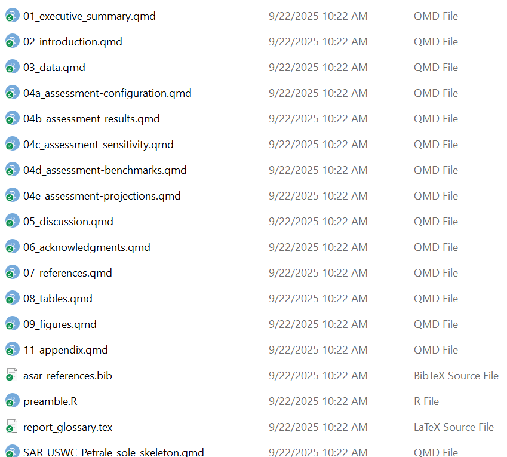
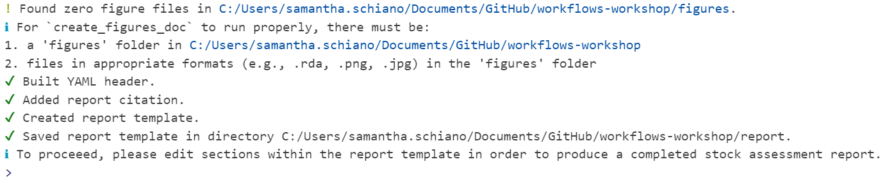
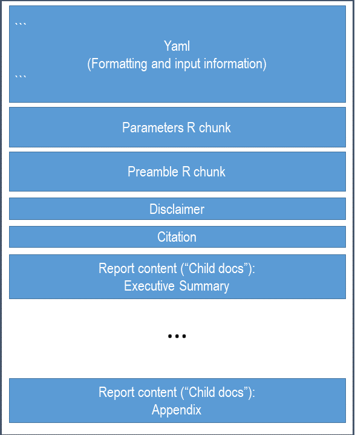
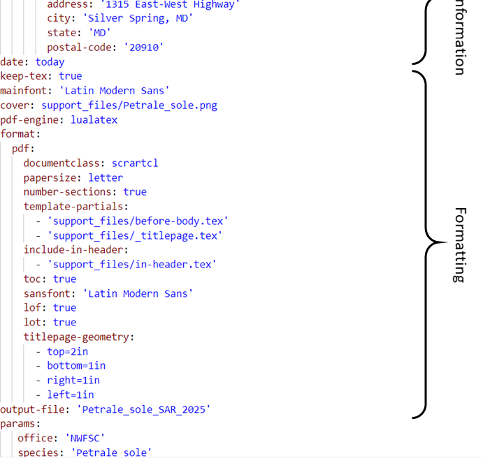
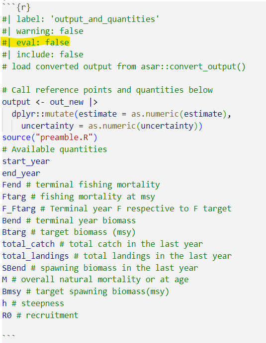

pak::pak("nmfs-ost/asar")Day 2
- Learn the basics of creating a stock assessment report using
asar - Understand the complexities and customization options of the package
- Practice using
asarand ask questions
Introduction
Icebreaker
Welcome! Please open the Day 2 communal notes doc and participate in the icebreaker exercise.
Code of conduct
Everyone participating in this workshop is required to abide by the terms of our Code of Conduct. We encourage you to contribute to a positive environment for our community by:
- Demonstrating empathy and kindness toward other people
- Being respectful of differing opinions, viewpoints, and experiences
- Giving and gracefully accepting constructive feedback
- Accepting responsibility and apologizing to those affected by our mistakes, and learning from the experience
- Focusing on what is best not just for us as individuals, but for the overall community
If you believe that someone is in violation of the Code of Conduct, please report the incident to our community leaders responsible for enforcement using this form.
Materials for today’s lesson
- Day 2 communal notes doc
- Contains areas for taking notes, definitions for jargon, and resources (from us and you!)
- JupyterHub workshop server
- Environment where you can code along with us, if you’d prefer
- All necessary packages are already installed
- Username: your email
- Password: ask us
- Sample data
- Sample model output data for coding demonstrations
How to engage with us
Questions: Please raise your hand, or write your question in the chat, at any time. Depending on our schedule, we may ask that you save larger questions for breaks.
Setup
Fork workshop repository – take them through it and explain materials
asar: Automated Stock Assessment Reporting
In this section we will cover the basics of asar by generating a blank stock assessment report and going through basic navigation of the template.
Installation
Attendees of the workshop should have already downloaded this package during day 1. If you have not, please download asar through the following code:
Note
If you receive an error message when attempting the download the package, please ask the isntructor for alternative directions or see the README on the asar repository.
Recommended workflow
We highly recommend using a project based workflow meaning creating an R project for each report. This makes returning to your session and maintaining files easier. Using either a project or GitHub repository will help you in the long run.
To create a new R project in Rstudio:
File > New Project > New or Existing Directory
Important
If you use VSCode or Positron for your IDE, by navigating to a folder on your computer, it will automatically initialize a project-like environment.
The main asar functions
asar revolves around 4 primary functions, but contains a variety of support functions that help make the template. While most of them are accessible to the user, they would not perform helpful functions for them. We will be going over the following functions:
create_template()convert_output()create_tables_doc()create_figures_doc()
** Time to browse documentation? or show info from site? **
create_template()
What it does:
Generates a set of files that setup a stock assessment report with its supporting files.
Within the created files is the “skeleton file” which drives the render of the entire report. For those familiar with Rmarkdown or Quarto books, this is operating similar to a .yml file. The other quarto files found in your folder will be what we refer to as “child documents”, or child docs for short. These are the actual files that you will fill in when writing your report. These are the bulk of your content!
Try it out!
create_template() contains A LOT of arguments that allow the user to customize their document how they want. The function contains a set of defaults that would produce a template that could be rendered, but contains no real information relevant to the target stock.
So, let’s do more than just create a blank template! The following arguments are some key parts to fill in for a specific stock assessment report:
| Argument | Options |
|---|---|
| format | pdf, html |
| type | SAR, pfmc, safe |
| office | afsc, pifsc, nefsc, nwfsc sefsc, swfsc |
| region | - |
| species | - |
| spp_latin | - |
| year | - |
| authors | - |
| file_dir | - |
# Adjust below example based on audience
library(asar)
library(here)
create_template(
format = "pdf", # optional "html"
type = "SAR", # add'l options: "safe", "nemt", "pfmc"
office = "NWFSC",
region = "U.S. West Coast",
species = "Petrale sole",
spp_latin = "Eopsetta jordani",
authors = c("Samantha Schiano" = "OST"),
file_dir = here::here()
)Run it!
You should see a folder called “report” where you indicated in the argument file_dir. It should have a set up that looks like this:

Note
You should see a variety of messaged reported in the console to indicate that it worked! For a blank template with no errors, it should look like this:

Let’s take a tour of the content we created!
The skeleton

As previously mentioned, the skeleton file controls the rest of the report. This is the file you go to to compile your report, change formatting, or add quantities to reference in your document.
We went over the basics of a Quarto yaml in Day 1, but when using asar, you don’t actually have to fill in anything yourself. The beauty of using asar is that it removes this task, but filling out information provided in the create_template() arguments and providing the template custom formatting that is part of the package (and the NOAA standard!).

The YAML controls the following:
- title
- authorship
- formatting
- rendered file name
- parameters
- species cover image
- bibliography
- citation style
Parameterization
Quarto has a cool feature that allows users to parameterize their document by utilizing markdown’s ability to render in-line code throughout your writing. In the yaml, there are pre-added parameters of the species, Latin name, region, and office. These are called in through an R chunk after the YAML.
You have two options for calling these parameters in your writing.
- ` r params$species ` (Quarto parameterization)
- ` r species ` (
asaruse of parameterization)
The preamble
The preamble is an R chunk that loads in a script called “preamble.R” which extracts key quantities commonly referenced in stock assessment reports. This will only work with a standard results file converted using asar::convert_output(), which we will get to shortly.

The quantities in found in this chunk can be referenced in-line throughout the document:
` r R0 `
Note
For more information on markdown notation, see Day 1 of this workshop or navigate to our article on the topic!
Demo of where to find preamble quantities and methods to adding to it
The content
The “child docs” are where you as the assessment author or contributor report out the information you need to include. The template is highly modular so there are files for each section of the report and sometimes files for subsections. The default asar template creates child docs following the NOAA standard stock assessment report guidelines consisting of the following:
- executive summary
- introduction
- data
- assessment (modelling and results)
- discussion
- acknowledgements
- references
- tables
- figures
- appendix
Each child doc contains pre-determined headers and labels for the author to reference back to throughout the document. There are also descriptions within each section that depcit what you should report on throughout the document. You can either keep or remove these notes once the document is finished, either way, they will not be included in your final report.
Child docs are not intended to be rendered on their own, but only from the skeleton as a whole!
Important
We are advising everyone that if required content is needed beyond the standard guidelines, that it gets placed in the appendix; however we encourage everyone to think about the importance of the content in terms of review for management versus CIE or SSC review.
Demo of child docs and adding quantities from the preamble into your document
convert_output()
Another major component of asar is our converter function which converts an output file from a stock assessment model to a standard format which can be used by the preamble and our other package stockplotr.
The convert_output function currently accepts output from Stock Synthesis (Report.sso) version 3.30 and higher, Beaufort Assessment Model (BAM; output.rda), or Fishereies Integrated Modelling System (FIMS; R object). We are actively working on expanding the convert_output function to be compatiable with all major U.S. stock assessment models. This function takes a lot of resources to develop, so any contribution to the package is welcome! If you have a model that is not currently compatible with asar::convert_output(), please navigate to our article describing the function and how to get your output in the same format as those produced from the converter!
Let’s try it out!
We have uploaded an example Report.sso file in the workshop GitHub, but if you have a compatible output file, we encourage you to use your own.
# Identify output file
output_file <- here::here("example_output", "Report.sso")
# convert the output
petrale <- asar::convert_output(output_file)petraleADD SCREENSHOT OF petrale HERE
Tip
convert_output() will recognize which model the results file came from as well as fleet names. In the rare case either of these are incorrect, the function contains arguments of model and fleet_names which you as the user can indicate for the function.
If you are explicitly stating fleet names, make sure they are in the order you expect them to be found in the file.
Format of converted output
The converted output is a tibble that reframes and reshapes your data. The tibble contains each output value as a row with its error and any associated indexing values.
Walk through of converted output object
Note
For more information, navigate to this article describing the conversion process and find ways your can convert your model’s data!
asar workflow: Complex example
- Customized sections
- Reorganizing section order
- Other functions
- Latex (if there’s time/interest)
- explain limitations or potential customizations
Rerendering report
Calling previous report
Summary (10 mins)
Final Reminders
- We will be holding office hours tomorrow 30 minutes before the next session starts for any questions.
- Feel free to practice some more tonight and come tomorrow with any questions you may have.